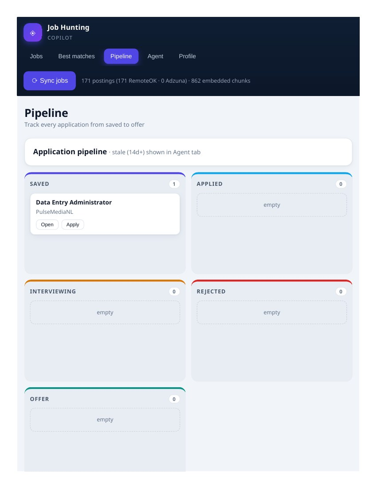

At a glance: Spark data pipeline · RemoteOK third-party API · pgvector embeddings (all-MiniLM-L6-v2, 384-dim, HNSW index) · Flask app with 5-tab UI · FastMCP AI agent server with 8 read/write tools · Postgres (Lakebase) as the single source of truth · deployed as a Databricks App · DataExpert.io capstone, graded A (99/100).
The problem.
Anyone who has hunted for a job knows the grind: refresh job boards, skim dozens of postings, copy links into a spreadsheet, lose track of what you applied to, and start over tomorrow. Every step is manual, and the signal — which roles actually fit me? — drowns in noise. I wanted a system that treats the job search like what it is: a data pipeline with an analyst on top. This was my capstone for DataExpert.io's "Rise of the AI Data Engineer" bootcamp, where the brief demanded five things in one system: a Spark pipeline, a third-party API, unstructured data processing with embeddings, a Databricks App with a real frontend, and an AI agent whose tools both read and write.
What it does.
The app opens on five tabs, each one a job-hunt chore, automated:
Jobs — semantic search across every synced posting. Type "remote data analyst roles with SQL and Tableau" and get ranked cards with match percentages, not keyword hits.
Best matches — every posting ranked against my actual resume embedding, highest match first.
Pipeline — a kanban board (Saved → Applied → Interviewing → Rejected → Offer) so no application gets lost.
Agent — a chat copilot: "find me remote analyst jobs," "why is this a match?", "what's gone stale?", "draft a cover letter for this posting."
Profile — my resume, parsed into structured data: headline, skills with years, target roles, work authorization.
How it was built.
The pipeline (Spark). A Spark job pulls postings from the RemoteOK API on a schedule, normalizes titles, companies, locations, and descriptions, deduplicates, and loads them into Postgres tables — 8 spec tables for postings, pipeline stages, notes, and profile data. An Adzuna API client is wired in as a second source, ready for a key.
Unstructured data (embeddings). Every posting description is chunked and embedded with all-MiniLM-L6-v2 (384 dimensions), stored in pgvector with an HNSW index for fast cosine search. At last count: 862 embedded chunks powering the semantic search and the match ranking.
The app (Flask + Databricks Apps). A Flask backend serves 25 routes — search, ranking, pipeline moves, notes, cover-letter drafting, match explanations — behind a five-tab frontend. It runs as a Databricks App, reading its database URL from the environment, with the Lakebase Postgres as its store.
How it all integrates.
The key design decision: one database, three consumers. The Spark pipeline writes postings and embeddings into Postgres. The Flask app reads from those same tables to render search, rankings, and the pipeline board — and writes back when you save a job, move a card, or add an interview note. The AI agent is a separate FastMCP server exposing 8 tools (search_jobs, explain_match, save_job, move_stage, add_note, draft_cover_letter, list_stale, get_profile) that hit the same database through the same API layer the UI uses. Nothing is duplicated: the agent and the interface are two faces of one system, so a job the agent saves appears on your board instantly, and a note you add in the UI is visible to the agent's next answer.
The interface.
The first version worked but looked like a prototype. I rebuilt the frontend with a dark navy sidebar, match scores as color-coded badges, a real chat interface for the agent, and a polished kanban board:

The results.
171 real job postings synced and searchable the day it went live. Semantic search returns ranked cards with similarity scores. The agent answers in plain language with job IDs and match percentages. The pipeline board tracks a real application end to end. And the grader agreed: the capstone earned A (99/100) — 15/15 on the data pipeline, 15/15 on API integration, 15/15 on unstructured data processing, 15/15 on the Databricks App, 29/30 on the AI agent — closing out the bootcamp at 100 / 100 / 95 / 99.
The whole job search, compressed into one system: the pipeline finds the roles, the embeddings rank them, the agent reasons over them, and the board tracks them.
What is next.
Plugging in the Adzuna API key for a second posting source, scheduled re-syncs so the index never goes stale, and multi-step agent reasoning so the copilot can chain tools — search, compare, then draft — in a single answer.